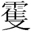
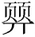

元固墓志一枚 四·○○ 一月二日
殷虚书契考释一册 七·○○ 一月四日
殷虚书契待问编一册 二·五○
唐三藏取经诗话一册 一·五○
校官碑一枚 二·○○ 一月二十日
李琮墓志连侧一枚 一·五○
魏法兴等造象一枚 ○·五○
张寿残碑一枚 ○·五○ 一月廿七日
冯晖宾造象四枚 一·五○
释教画象二枚 三·○○二四·○○○
瘗隺铭拓本一枚 五·○○ 二月三日
醉醒石二本 六·○○ 二月六日
曹续生铭记一枚 一·○○ 二月十日
马廿四娘买地券一枚 一·○○
殷文存一册 七·○○ 四月售出
神州大观第十二集一册 三·○○ 二月十七日
写礼庼遗著四册 三·○○
江宁金石记二册 二·○○
元纂墓志一枚 五·○○ 二月二十四日
兰夫人墓志一枚 二·○○
碑别字二册 二·○○三七·○○○
张僧妙碑一枚 二·○○ 三月三日
姚伯多等造象四枚 二·五○
锜双胡等造象四枚 二·五○
苏丰国等造象二枚 一·○○
合邑 人等造象一枚 宋芷生寄 三月四日
人等造象一枚 宋芷生寄 三月四日
陈氏合宗造象四枚 同上
艺术丛编第二年分六册 三四·○○ 三月九日
说文古籀补二册 二·二○
字说一册 ○·八○
名原一册 一·○○
好大王专一枚 师曾赠 三月十一日
杂拓片三枚 一·○○
曹全碑并阴二枚 二·○○
元显魏墓志盖一枚 二·○○ 三月十七日
隋唐以来官印集存一册 六·○○
未央东阁瓦拓一枚 一·○○ 三月二十五日
更封残石一枚 一·○○ 三月二十九日
翟蛮造象一枚 一·○○
石门画象并阴二枚 二·五○ 三月卅一日
李洪演造象一枚 二·五○
建崇寺造象二枚 二·○○
杨显叔造象一枚 ○·五○
张神龙息墓记一枚 ○·五○六八·○○○
□朝侯小子残碑阴一枚 二·○○ 四月十一日
杜

等造象四枚 三·○○残画象一枚 四·○○ 四月十四日
孙世明等造象五枚 二·○○ 四月廿一日
画象砖五枚 二·○○
画象砖九枚 二·○○ 四月二十八日
韩显宗墓志一枚 四·○○
赵氏墓志一枚 一·○○
安鹿交村造象一枚 一·○○
僧晕造象一枚 三·○○
范国仁造象二枚 二·○○二六·○○○
玉函山隋唐造象卅五枚 四·○○ 五月三日
郗景哲等造象残石一枚
王通墓志一枚 一·○○
杂伪拓片六枚 二·○○ 五月九日
端氏臧石拓片六种十八枚 五·○○
王氏臧专拓片六十枚 三·○○ 五月十一日
文士渊等造象并阴二枚 一·○○ 五月十三日
题名残石一枚 一·○○
专拓片七枚 一·○○
梦东禅师集一册 许季上赠 五月二十一日
恒农墓专拓本百枚 二四·○○ 五月二十三日
江阿欢造象一枚 二·○○
讳德墓志一枚 二·○○
北齐造象二种二枚 ○·六○ 五月二十七日
黄初残石三枚 二○·○○ 五月二十九日
武猛从事□□造象坐二枚 一·四○六八·○○○
吕超墓志拓一枚 徐以

先生寄 六月二日金石小品拓片廿一枚 同上
残石拓片九枚 顾鼎梅赠 六月三日
嵩山三阙画象大小卅四枚 三六·○○ 六月四日
晋残石并阴合一枚 一·○○
朱博残石一枚 四·○○
刘汉作师子铭一枚 ○·五○
密长盛造桥碑并阴二枚 一·○○
千佛山造象十二枚 二·○○
云门山造象十枚 一·○○
仓龙庚午残石一枚 一·○○ 六月六日
里社残碑并阴二枚 八·○○ 六月十日
元思和墓志一枚 四·○○
示朴斋骈文一册 钱稻孙赠 六月十九日
郎邪台刻石一枚 五·○○ 六月二十二日
汉画象一枚 一·○○
神州大观第十三集一册 二·七○
古泉拓选印本二册 三·三○
愙斋集古录预约 一三·五○ 六月廿七日
马氏墓志一枚 一·○○八五·○○○
汉黄肠石拓片六十二枚 一三·○○ 七月九日
张朗墓碑并阴二枚 五·○○
惠晖造象并刻经三枚 一·○○ 七月十九日
殷虚卜辞一册 二三·○○ 七月三十一日
会仙友题刻一枚 一·○○
司马遵业墓志一枚 四·○○四七·○○○
杂汉画象六枚 四·○○ 八月十七日
白驹谷题刻二枚 二·○○
杨宣碑一枚 二·○○ 八月廿九日
广业寺造象碑一枚 二·○○一○·○○○
大乘法苑义林章记七册 三·○○ 九月七日
汉专拓片三枚 一·○○
杂造象拓片十枚 四·○○
冕服考二册 二·○○ 九月十日
选适园丛书四种五册 五·○○
闲渔闲闲录一册 一·○○
古兵符考略残稿一册 一·○○
铁云臧龟之余一册 二·○○
面城精舍杂文一册 一·○○
周华岳颂并唐后碑二枚 二·○○ 九月十八日
殷虚书契精华一册 三·○○ 九月二十一日
涵芬楼秘笈三至五集廿四册 一二·○○
杂砖拓片二十枚 二·○○ 九月二十七日
瓦当拓片四十枚 六·○○ 九月二十八日
中国名画第廿集一册 三·○○四八·○○○
三公山碑并侧二枚 二·○○ 十月十六日
汉画象二枚 二·○○
洛音村人造象四枚 二·五○
李僧造象四枚 二·五○
牛景悦等造象一枚 一·○○
韩木兰墓铭一枚 一·○○
李元海等造象四枚 三·○○ 十月二十一日
合邑人等造象四枚 二·○○
东莞令薛广造象一枚 三·○○ 十月二十七日
合村长幼造象四枚 三·○○
卢文机墓志一枚 一·○○二三·○○○
陆绍墓志一枚 二·五○ 十一月十三日
永平残造象一枚 ○·五○
道 造象并侧三枚 一·○○
造象并侧三枚 一·○○
蜀贾公阙一枚 六·○○ 十一月二十日
元公墓志一枚 五·○○
姬氏墓志一枚 五·○○
愙斋集古录廿六册 一八·○○ 十一月廿七日三八·○○○
攀古楼汉石纪存一册 一·○○ 十二月二日
皆公寺造象一枚 一·○○ 十二月十四日
郭始孙造象四枚 二·○○
汉残石并阴一枚 一·○○ 〔十二月二十七日〕
残石一枚 一·○○
西狭颂并前题二枚 三·○○
五瑞图连记一枚 三·○○
六朝画象一枚 二·○○一四·○○○
总计券四八八·○○○元，约合见泉三百元。
[3] 浙江第五中学同学会 指“绍兴中学旅京同学会”聚会。浙江第五中学，参见本卷第65页注〔5〕。
[6] 姚伯多、锜双胡、苏丰国造象记 全名为《姚伯多兄弟等造老君象记》（北魏太和二十年）、《锜双胡二十人等造石象记》（北魏神龟三年）、《苏丰国等造释迦象记》（隋开皇十八年），鲁迅曾抄录这三种造象记。
[7] 即周作人《欧洲文学史》讲义，参看本卷第317页注〔2〕。6月17日的讲义同此。
[8] 休假 本日为“国会成立纪念日”。第一次国会于1913年4月8日召开，1916年12月21日国会公布增加每年4月8日为国会成立纪念日。
[9] 季巿眷明日行 许寿裳（季巿）于1917年9月被教育部任命为江西教育厅厅长，其家属于此时将前往，故许铭伯携其长子来辞行。
[10] 作《吕超墓志》跋 《吕超墓志》，1917年在绍兴出土，仅存百十余字。鲁迅考证为南齐时刻石，曾作《吕超墓志铭跋》，现编入《集外集拾遗补编》。
[11] 浙江旅津公学 1909年创办。曾受蔡元培等的赞助。
[12] 《不自然淘汰》 短篇小说。瑞典斯特林堡著，周作人译，鲁迅录正。发表于《新青年》第五卷第二号（1918年8月）。
[14] 《吴郡郑蔓镜》拓片 1917年山阴兰上乡吕超墓中出土。似铅质，已碎裂，有铭文。鲁迅参照古代文献及其它实物写成《吕超墓出土吴郡郑蔓镜铭考》，现编入《集外集拾遗补编》。
[15] 写沪取汇券 此系汇给周作人回京的旅费。周作人于6月20日回绍兴探亲，9月4日从绍兴出发回京，6日经上海取此款，于10日抵北京。
[16] 指《随感录二十四》，周作人作，发表于《新青年》第五卷第三号（1918年9月）。
[19] 校《鲍氏集》 《鲍氏集》，指《鲍明远集》。鲁迅以清代毛斧季用宋本校勘过的版本校明代汪士贤校本，次日讫，并作《〈鲍明远集〉校记》，现编入《集外集拾遗补编》。
[22] 即《随感录三十五》、《随感录三十六》。后均收入《热风》。
[23] 欧战协济会 第一次世界大战结束后，由美国总统威尔逊倡议成立的组织。该会为协助处理各战地军士、俘虏及华工的善后事宜，曾发动募捐。中国认募一亿七千万元。当时国务院明令公职人员凡薪俸百元以上者捐俸十分之一。